I here the poll is closed, now we have to wait to find out if it was good aids or bad aids.
proximate honeycomb by Frank Lala Svarten in 32x32 #pixelart using the NES palette. Visit http://paint.lo4d.net/ …
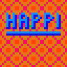
double clown by shi in 48x48 #pixelart using the Swanky16 palette. Visit http://paint.lo4d.net/ to draw your own!
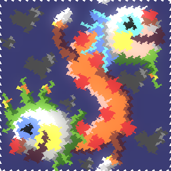
double clown by JetSet211 in 48x48 #pixelart using the Swanky16 palette. Visit http://paint.lo4d.net/ to draw you…
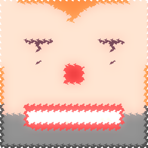
double clown by xranby in 48x48 #pixelart using the Swanky16 palette. Visit http://paint.lo4d.net/ to draw your o…
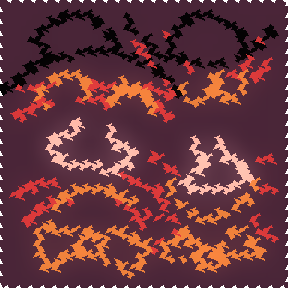
https://twitter.com/idlemoor/status/596292229741846528 @idlemoor I like to think of them as "Supporting traditional values." :)
double clown by Frank Lala Svarten in 48x48 #pixelart using the Swanky16 palette. Visit http://paint.lo4d.net/ to…
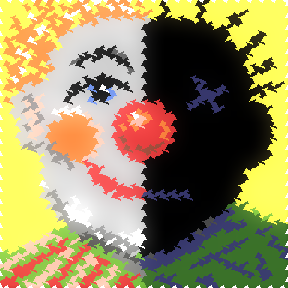
Todays #pixelart #swankypaint challenge is critical needle and I have no idea what that means
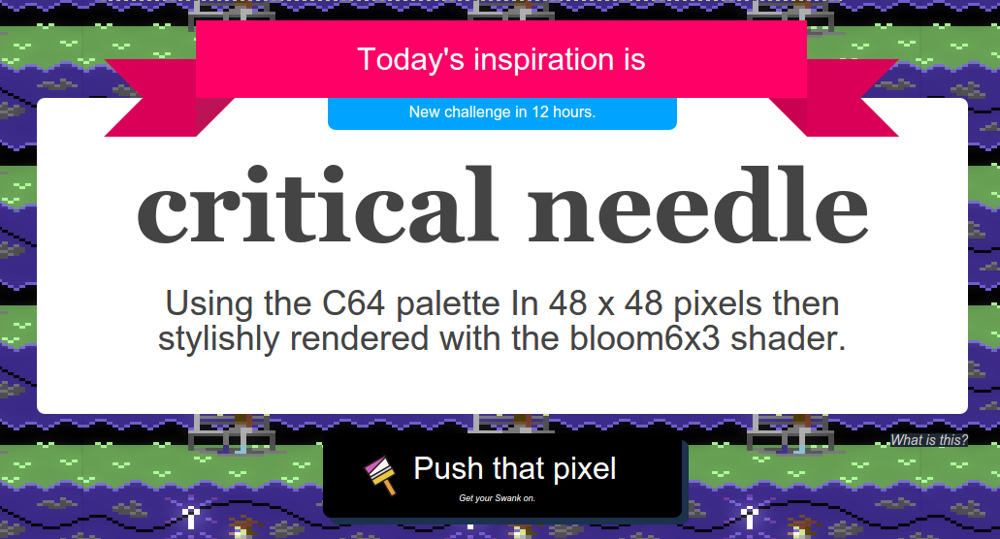
Good news, everyone!
https://www.youtube.com/watch?v=aXEUcyQaGEU&list=RDaXEUcyQaGEU
double clown by Crustolio in 48x48 #pixelart using the Swanky16 palette. Visit http://paint.lo4d.net/ to draw you…
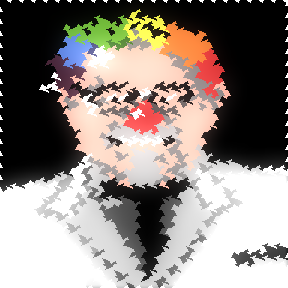
To accept this #pixelart #swankypaint challenge visit http://paint.lo4d.net/ and start drawing.
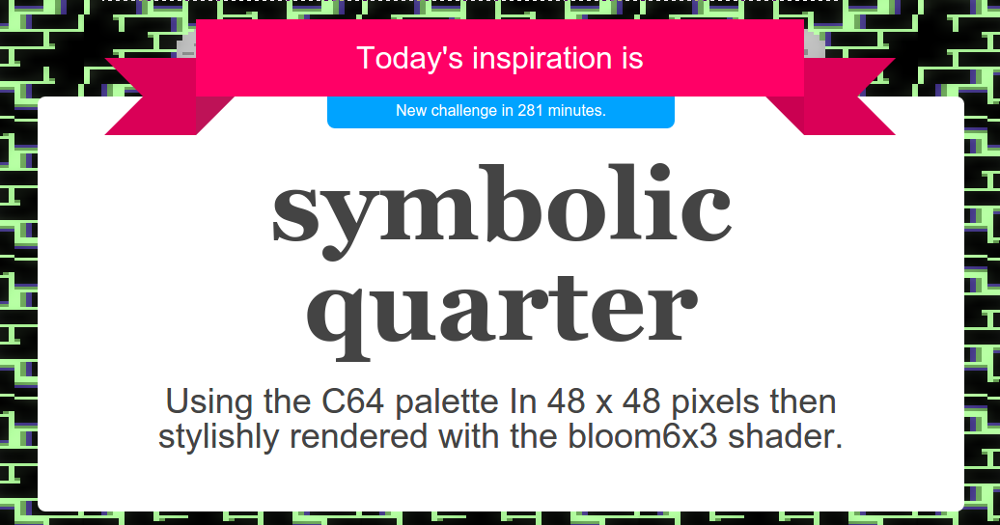
tropical plane by shi in 48x48 #pixelart using the C64 palette. Visit http://paint.lo4d.net/ to draw your own!
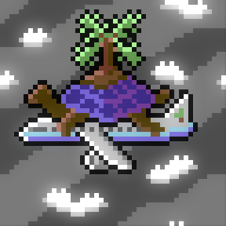
tropical plane by JetSet211 in 48x48 #pixelart using the C64 palette. Visit http://paint.lo4d.net/ to draw your o…
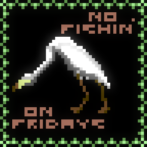
tropical plane by Frank Lala Svarten in 48x48 #pixelart using the C64 palette. Visit http://paint.lo4d.net/ to dr…
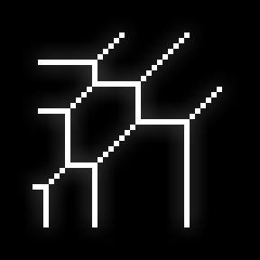
tropical plane by xranby in 48x48 #pixelart using the C64 palette. Visit http://paint.lo4d.net/ to draw your own!
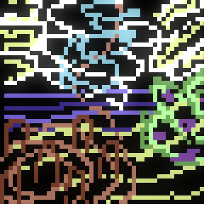
https://twitter.com/stubrady/status/595915094132916224 @stubrady Yup, pretty certain that's a lemming, or maybe a flower, but probably a lemming. @xranby :)
angry cactus by Frank Lala Svarten in 16x16 #pixelart using the MSX palette. Visit http://paint.lo4d.net/ to draw…
angry cactus by xranby in 16x16 #pixelart using the MSX palette. Visit http://paint.lo4d.net/ to draw your own!
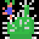
https://twitter.com/jibberkit/status/595670654583726080 @jibberkit It's always surprising to remember that its only 4 colours. It never looks like it and it never feels like it when drawing.